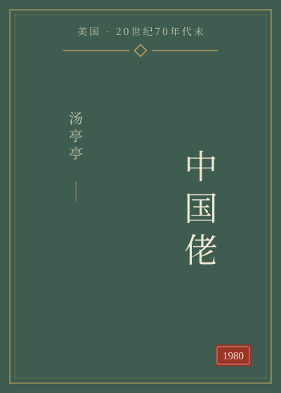
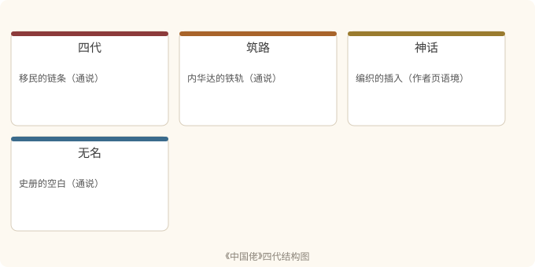

中国佬
一、基本信息
| 作者 | 汤亭亭 |
|---|---|
| 成书/出版 | 1980年（作者页注记：Britannica——中国佬 (1980)——美国图书奖） Maxine Hong Kingston — Encyclopaedia Britannica（百科全书） |
| 国别/地区 | 美国 |
| 时代 | 现当代 · 20世纪70年代末 |
| 体裁 | 长篇小说（混合文体） |
| 语言 | 英语 |

《中国佬》四代结构图（主题·结构图）
二、创作背景
作者页注记：中国佬 (1980)——'美国图书奖（Britannica）'。
Britannica：汤婷婷——华裔美国作家（作者页语境——待核）。
题材（通说待核）：华裔移民男性四代——神话、历史与家族的编织。
三、内容脉络
（通说待核）从'曾祖父'到'父亲'：内华达筑路与洗衣馆。
（通说待核）神话插入（鲁滨逊/屈原等——通说待核）。
四、主要人物表
| 人物 | 身份 | 说明 |
|---|---|---|
| 曾祖父/高祖父/父亲 | 移民四代 | （通说待核） |
五、主题与艺术特点
- 华裔移民的'无名'史（通说待核）。
- 神话与历史的编织（作者页语境）。
- '美国图书奖'（B注记）。
六、影响与评论
- Britannica：China Men (1980)——美国图书奖（作者页注记）。
Maxine Hong Kingston — Encyclopaedia Britannica（百科全书） - Britannica：《女勇士》为成名作（作者页交叉）。
Maxine Hong Kingston — Encyclopaedia Britannica（百科全书）
七、阅读建议
难点
- 混合文体（神话+家史）。
- 华人移民法案史（通说待核）。
- 《中国佬》中译本（漓江等——通说待核）。
- 英文原版。
汤亭亭第二作；与《女勇士》对读。
八、待核实
- 代际人名核对（通说）。
- 1980年出版（Knopf说）待核。
- '美国图书奖'（American Book Award——B注记）核对。